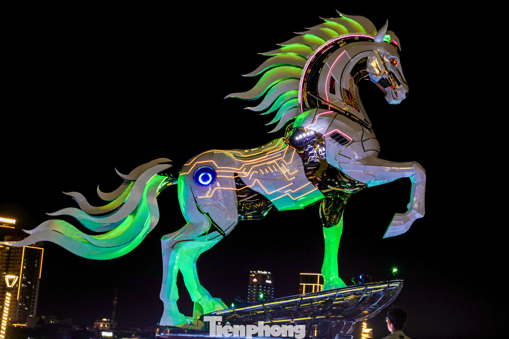
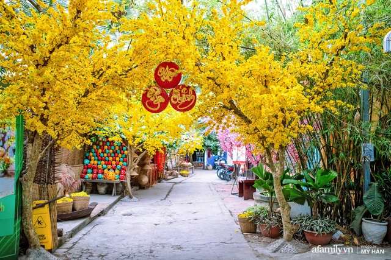

Năm 2026 đón chào chúng ta với linh vật là con Ngựa, biểu tượng của sự tự do, sức mạnh và lòng kiên định. Trong tâm thức người Việt, Tết không chỉ là thời khắc chuyển giao giữa năm cũ và năm mới, mà còn là dịp để mỗi người tìm về với cội nguồn, thắp nén tâm nhang tri ân tổ tiên. Không khí rộn ràng của những ngày giáp Tết Bính Ngọ với sắc mai vàng rực rỡ và tiếng cười nói hân hoan hứa hẹn một khởi đầu đầy năng lượng và hy vọng.

Bước sang năm 2026, chúng ta cùng kỳ vọng vào những bước tiến vượt bậc "nhanh như gió, mạnh như ngựa chiến". Hình ảnh phố phường nhộn nhịp, những tà áo dài thướt tha đi lễ chùa cầu may và mâm ngũ quả đủ đầy trên bàn thờ gia tiên chính là những nét đẹp văn hóa trường tồn. Tết Bính Ngọ chính là sợi dây gắn kết tình thân, nơi mọi khoảng cách bị xóa nhòa bởi tình yêu thương và lời chúc vạn sự như ý, tỷ sự như mơ.

--- Hãy chọn các danh mục bên trái để khám phá thêm về Tết 2026 ---